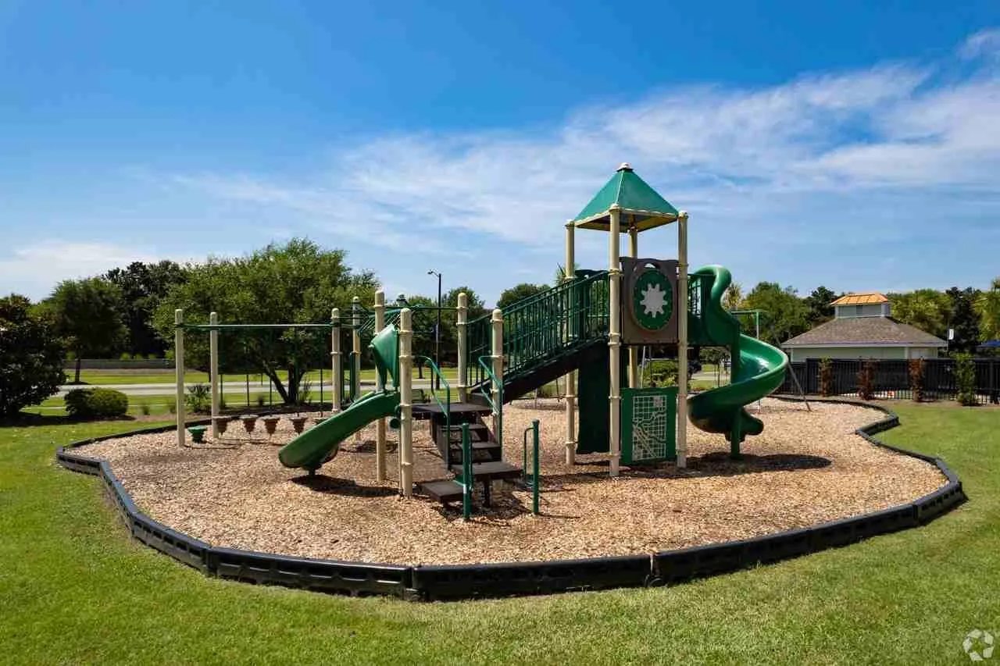

Photo pair 1


geometrically_supported
Shared-image context: No cross-listing duplicate found by the current three-hash test
Hash / geometric comparison evidence
{
"hash_hamming": {
"dhash": 1,
"center_phash": 2
},
"hash_min": 1,
"priority_policy": "obvious_v1_both_phashes_le_6_nonshared",
"exact_hash_hamming": {
"phash": 2,
"center_phash": 2
},
"orb_ransac": {
"score": 0.7230123456790123,
"detail": {
"inliers": 726,
"ratio_matches": 729,
"coverage": 0.34718763139836334,
"homography": [
[
0.9996308014936093,
-0.00033508364216615463,
0.04550148434583475
],
[
-0.0004290890864680629,
0.9962049975838699,
5.394634662950423
],
[
-3.52123759095892e-07,
-1.21366034904492e-06,
0.9999999999999999
]
]
},
"comparison_ms": 17.618537007365376,
"feature_lookup_or_extraction_ms": 75.12211000721436
}
}